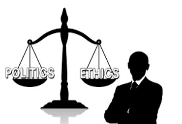

People are ethical because of social norms, religious beliefs and laws. Ethical foundations in an individual define the way he lives the life by differentiating between right and wrong and behave in a way which improves the situation directly or indirectly however doesn't harm it at any cost. Ethics have been defined by relevant governmental and religious authorities for several domains of life however below article occupies 'blanket' coverage for all norms of life.
Journalists cannot always guarantee ‘truth’, but getting the facts right is the cardinal principle of journalism.
Journalists must be independent voices; we should not act, formally or informally, on behalf of special interests whether political, corporate or cultural.
Most stories have at least two sides. While there is no obligation to present every side in every piece, stories should be balanced and add context.
Journalists should do no harm. What we publish or broadcast may be hurtful, but we should be aware of the impact of our words and images on the lives of others.
A sure sign of professionalism and responsible journalism is the ability to hold ourselves accountable.
This collaborative project aims to be the world’s largest collection of ethical codes of conduct and press organisations.
1ETHICS ANIMAL
we looked at the use of animals in spaceflight to further our understanding of the space environment. The use of animals in scientific testing has always been, and will continue to be a controversial subject. For example Laika was 3 years old when she was launched on the Sputnik 2 spacecraft on November 3rd, 1957. She was secured in a special pressurised capsule 3 days before launch and provided with a high nutrition gel for food and water.
2ETHICS BIOETHICS
Bioethics is the study of the typically controversial ethical issues emerging from new situations and possibilities brought about by advances in biology and medicine. It is also moral discernment as it relates to medical policy and practice. Bioethicists are concerned with the ethical questions that arise in the relationships among life sciences, biotechnology, medicine, politics, law, and philosophy. It also includes the study of the more commonplace questions of values ("the ethics of the ordinary") which arise in primary care and other branches of medicine.
3ETHICS COMPUTER
Computer ethics are a set of moral standards that govern the use of computers. It is society's views about the use of computers, both hardware and software. Privacy concerns, intellectual property rights and effects on the society are some of the common issues of computer ethics. Computer ethics is a part of practical philosophy concerned with how computing professionals should make decisions regarding professional and social conduct.
4ETHICS DONATION
Giving up your unused or unwanted stuff is a great way to make space in your home for the items that you do enjoy on a regular basis. The ethical justification for the use of organs from living donors begins with a consideration of the potential benefits, mainly to the recipient but also to the donor, balanced against the risks to the donor, understood in terms of both the probability and the magnitude of harm.
5ETHICS MEDICAL
Medical ethics is the study of moral values and judgments as they apply to medicine. The four main moral commitments are respect for autonomy, beneficence, normaleficence, and justice. Using these four principles and thinking about what the physicians specific concern is for their scope of practice can help physicians make moral decisions. As a scholarly discipline, medical ethics encompasses its practical application in clinical settings as well as work on its history, philosophy, theology, and sociology.
6ETHICS MILITARY
DoDD 5500.7, Standards of Conduct, provides guidance to military personnel on standards of conduct and ethics. Violations of the punitive provisions by military personnel can result in prosecution under the Uniform Code of Military Justice (UCMJ). Violations of the punitive provisions by civilian personnel may result in disciplinary action without regard to the issue of criminal liability. Military members and civilian employees who violate these standards, even if such violations do not constitute criminal misconduct, are subject to administrative actions, such as reprimands. The use of the term "DoD Employee" in this article includes civilian employees and military members.
7ETHICS PERSONAL
Personal ethics refers to the ethics that a person identifies with in respect to people and situations that they deal with in everyday life. Professional ethics refers to the ethics that a person must adhere to in respect of their interactions and business dealings in their professional life.At its simplest, ethics is a system of moral principles. They affect how people make decisions and lead their lives. Ethics is concerned with what is good for individuals and society and is also described as moral philosophy.
8ETHICS POLITICAL
Political ethics (also known as political morality or public ethics) is the practice of making moral judgements about political action and political agents. It covers two areas. The first is the ethics of process (or the ethics of office), which deals with public officials and the methods they use. The second area, the ethics of policy (or ethics and public policy) concerns judgments about policies and laws. Political ethics not only permit leaders to do things that would be wrong in private life, but also requires them to meet higher standards than would be necessary in private life.
9ETHICS PUBLIC HEALTH
Public health professionals operate in an ethically complex environment. Ethical issues identified by participants include paternalism and honesty, conflicting responsibilities, pressures on decision making, and uncomfortable relations with the pharmaceutical industry.The central ethical dilemma, therefore, in public health, is to balance respect for individual freedom and liberty with the responsibility of governments to provide their citizens with some degree of protection in relation to health. In traditional bioethics, much emphasis is placed on the freedom of the individual.
10ETHICS PUBLICATION
The deliberate and systematic consideration or moral problems arising in connection with the publication of scientific research. Ethical violations, especially less serious infractions, are prevalent Rates of detection are low Ethical violations affect the quality and integrity of science Compliance review and journal requirements are increasing (e.g., human subjects committees, conflict of interest statements)
11ETHICS RELIGION
Religious ethics are the moral principles that guide religions and that set the standard for what is and isn't acceptable behavior. Surprisingly similar from one religion to the next, these fundamental principles flow from the core beliefs and ancient wisdom of religion, as well as its teachers and traditions."Morality does not rely on religion" "A man's ethical behavior should be based effectually on sympathy, education, and social ties and needs.
12ETHICS SOCIAL WORK
Social Work is both an academic discipline and profession that concerns itself with helping individuals, families, groups and communities enhance their social functioning and overall well-being. Adopted by the British Association of Social Workers, the professional association for social workers in the UK Its duty is to ensure as far as possible that its members discharge their ethical obligations and are afforded the professional rights that are necessary for the promotion of the rights of service users
13ETHICS STUDENT
The five ethical principles that inform our work as student life professionals are 1) Autonomy, 2) Prevent Harm, 3) Do Good, 4) Justice, and 5) Fidelity. In the goal of autonomy, we recognize the need for students to become increasingly independent.The Ethics in Education is very crucial for all the students because they help to develop the personality off, students. Ethics in Education assist to manage the education system and make sure that these habits positively take part in human well-being.
14ETHICS TEACHERS
Promote the ethics of the profession. Inspire the quality of behaviour that reflects the honour and dignity of the profession. Encourage and emphasise those positive attributes of professional conduct that. Characterise strong and effective teaching. Enable members of the profession to appraise and reflect on their ethical decisions.
|  |